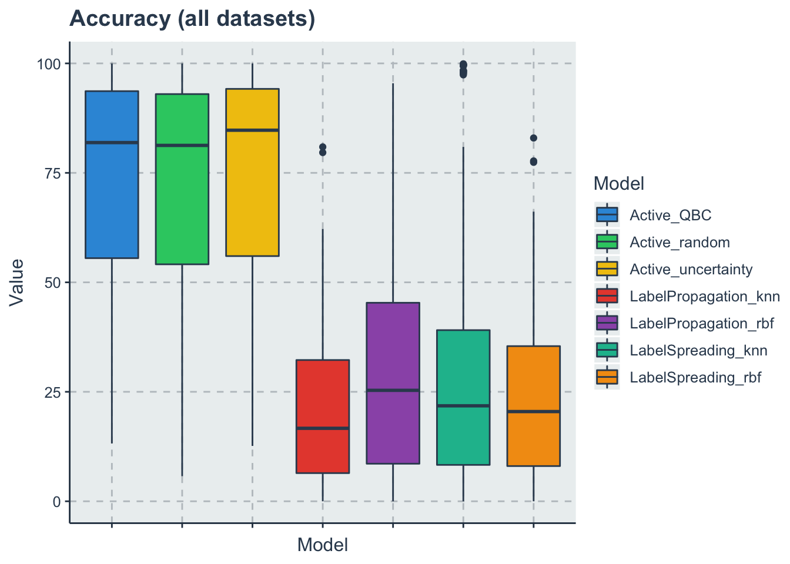
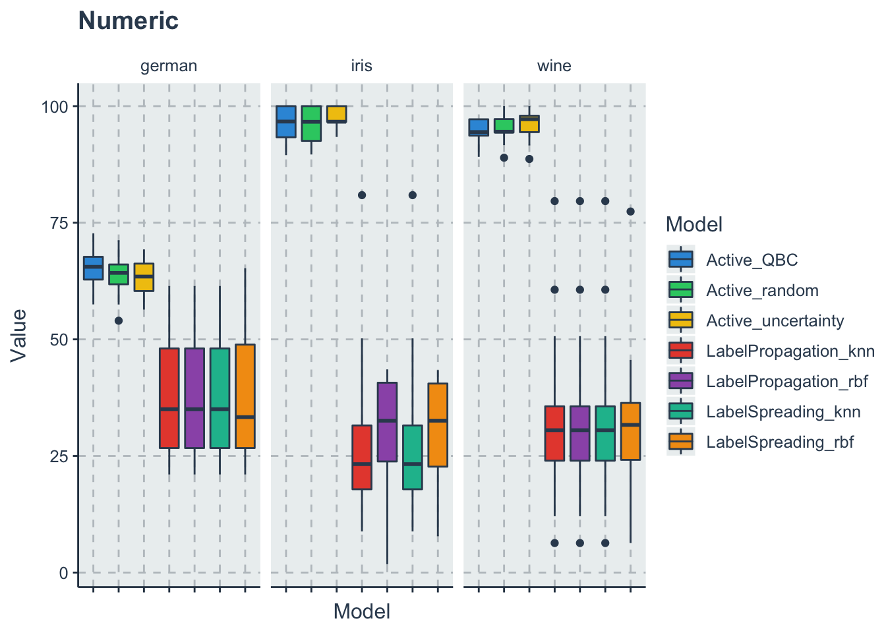
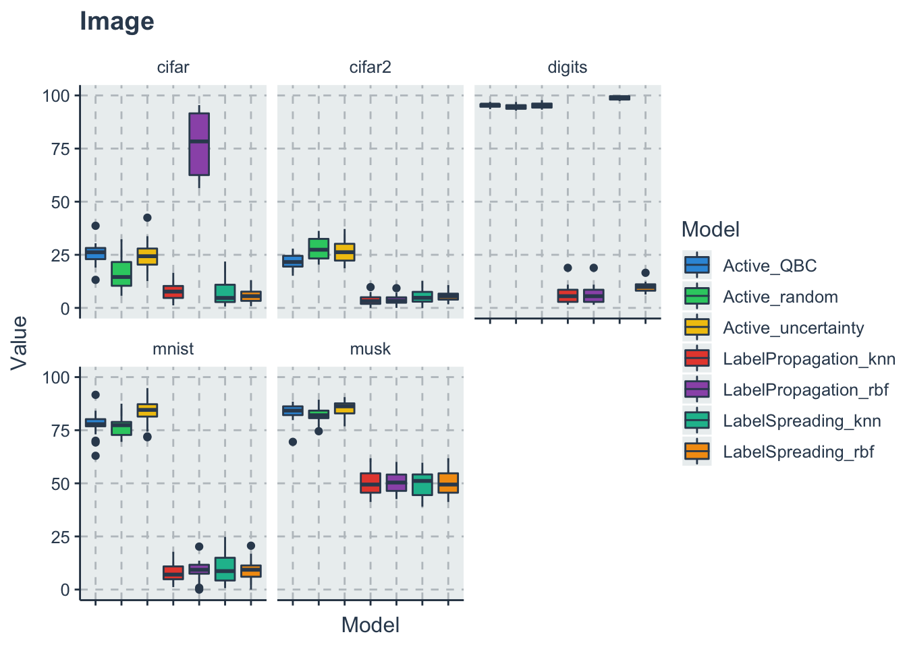
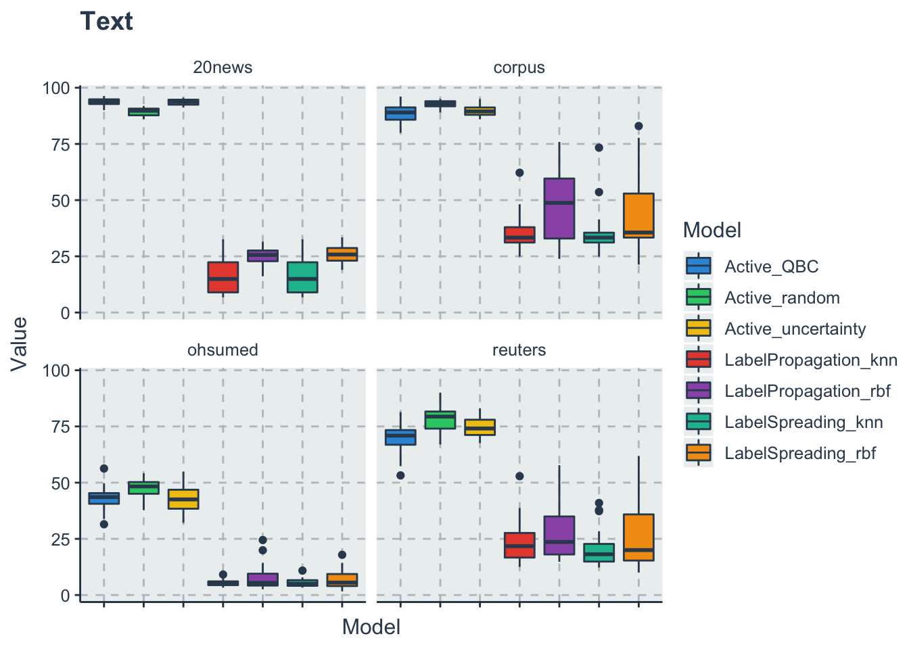
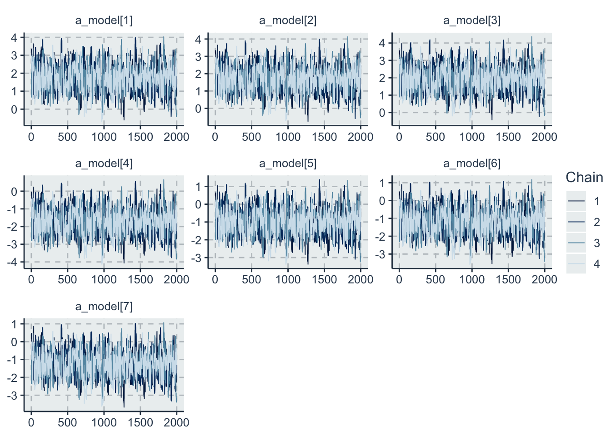
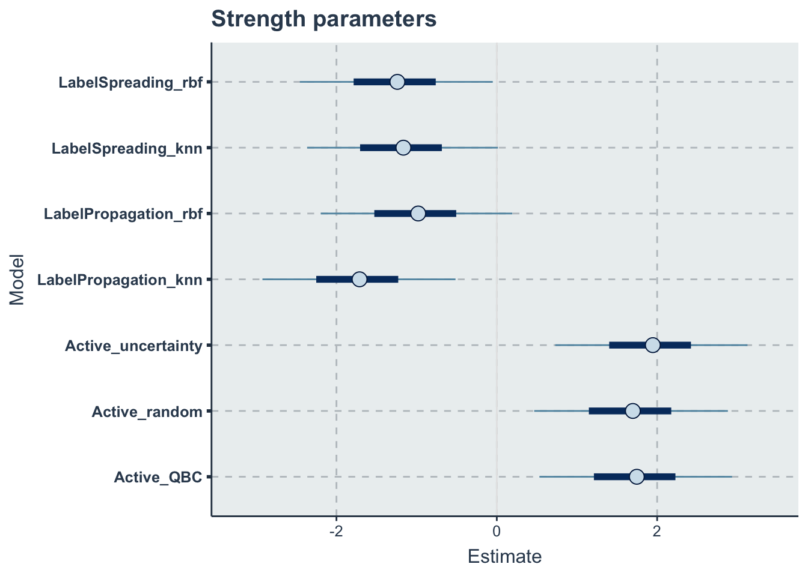

Chapter 1 RQ1
How can we rank different active learning and semi-supervised learning algorithms in terms of accuracy?
d <- read_csv('./data/full_data.csv') %>%
dplyr::rename(Value='value') %>%
select(-X1)
# %>%
# dplyr::filter(ValueType=='accuracy')1.1 Descriptive statistics
p<-ggplot(data=d, aes(x=Model, y=Value, fill=Model))+
geom_boxplot()+
theme(axis.text.x = element_blank())+ #remove the x labels
labs(title = 'Accuracy (all datasets)')
p
save_fig(p,'aggregatedboxplots.pdf')A respective table for this box-plot but with 5% and 95% quantiles
d %>%
dplyr::group_by(Model) %>%
summarise(Mean = mean(Value),
SD = sd(Value),
Median = median(Value),
'5%' = quantile(Value,0.05),
'95%' = quantile(Value,0.95)) %>%
dplyr::ungroup() %>%
kable(
"latex",
table.envir = 'table',
caption='Summary statistics for the accuracy aggregated data',
booktabs=T,
label='summarystatisticstable',
format.args = list(scientific = FALSE),
digits = 3,
linesep = "") %>%
kable_styling(latex_options = c("hold_position"),
full_width = F) %>%
readr::write_lines('./paper/summarystatisticstable.tex')Breaking down in all individual datasets if you want to justify the many outliers due to cifar
p1<-
d %>% dplyr::filter(DataType=='numeric') %>%
ggplot(aes(x=Model, y=Value, fill=Model))+
geom_boxplot()+
theme(axis.text.x = element_blank())+ #remove the x labels
facet_wrap(~Dataset)+
labs(title = 'Numeric')
p2<-
d %>% dplyr::filter(DataType=='image') %>%
ggplot(aes(x=Model, y=Value, fill=Model))+
geom_boxplot()+
theme(axis.text.x = element_blank())+ #remove the x labels
facet_wrap(~Dataset)+
labs(title = 'Image')
p3<-
d %>% dplyr::filter(DataType=='text') %>%
ggplot(aes(x=Model, y=Value, fill=Model))+
geom_boxplot()+
theme(axis.text.x = element_blank())+ #remove the x labels
facet_wrap(~Dataset)+
labs(title = 'Text')
p1
p2
p3
save_fig(p1,'boxplotsperdataset-numeric.pdf')
save_fig(p2,'boxplotsperdataset-image.pdf')
save_fig(p3,'boxplotsperdataset-text.pdf')1.2 Bradley terry model for ranking
To create a Bradley terry model we need first to transform our dataset to paired comparisons On each iteration for each dataset for each variable we will rank the models based on the Value of the accuracy (lower accuracy -> smaller) After we expand it to wide so we can compare each algorithm with each other and create a BT dataset
d_acc_rank <- d %>%
dplyr::group_by(Dataset, Variable, Iteration) %>%
dplyr::mutate(Rank=-rank(Value, ties.method = 'random')) %>%
dplyr::ungroup() %>%
dplyr::select(-Value) %>% #we need to drop the Value variable to pivot wider
tidyr::pivot_wider(names_from = Model,
values_from=Rank)Now we can create the BT dataset
#a vector with the name of the algorithms
models <- get_index_names_as_array(d$Model)
n_models = length(models)
comb <- gtools::combinations(n=n_models, r=2, v=seq(1:n_models), repeats.allowed = F) #all teh paired combinations
d_acc_bt <- dplyr::tribble(~model0_name, ~model0, ~model1_name, ~model1, ~y, ~Iteration, ~Dataset, ~DatasetType)
#now we loop each row of the rank wide dataset and create a new one
for(i in 1:nrow(d_acc_rank))
{
current_row <- d_acc_rank[i,]
for(j in 1:nrow(comb)){
comb_row <- comb[j,]
model0_name <- models[comb_row[1]]
model0 <- comb_row[1]
model0_rank <- current_row[[1,model0_name]]
model1_name <- models[comb_row[2]]
model1 <- comb_row[2]
model1_rank <- current_row[[1,model1_name]]
diff_rank <- model1_rank - model0_rank
#SInce higher accuracy is better if model 1 rank- model 0 rank is positive than model1 wins and y=1 else y=0
y <- ifelse(diff_rank>0, 1, 0)
d_acc_bt <-d_acc_bt %>%
add_row(model0_name=model0_name,
model0=model0,
model1_name=model1_name,
model1=model1,
y=y,
Iteration=current_row$Iteration,
Dataset=current_row$Dataset,
DatasetType=current_row$DataType)
}
}Now that we have the dataset we can run the model
print_stan_code('./models/rankingmodel.stan')// Ranking model
// Author: David Issa Mattos
// Date: 6 sept 2020
//
//
data {
int <lower=1> N_total; // Sample size
int y[N_total]; //variable that indicates which one wins model 0 or model 1
int <lower=1> N_models; // Number of models
int <lower=1> model0[N_total];
int <lower=1> model1[N_total];
// //To model the influence of each benchmark
// int <lower=1> N_bm;
// int bm_id[N_total];
}
parameters {
real a_model[N_models]; //Latent variable that represents the strength value of each model
}
model {
real p[N_total];
a_model ~ normal(0,2);
for (i in 1:N_total)
{
p[i] = a_model[model0[i]] - a_model[model1[i]];
}
y ~ bernoulli_logit(p);
}
//Uncoment this part to get the posterior predictives and the log likelihood
//But note that it takes a lot of space in the final model
// generated quantities{
// vecor [N_total] y_rep;
// vector[N_total] log_lik;
// for(i in 1:N_total){
// real p;
// p = a_alg[algo1[i]] - a_alg[algo0[i]];
// y_rep[i] = bernoulli_logit_rng(p);
//
// //Log likelihood
// log_lik[i] = bernoulli_logit_lpmf(y[i] | p);
// }
// }m1_data <- list(
N_total=nrow(d_acc_bt),
y = as.integer(d_acc_bt$y),
N_models = as.integer(n_models),
model0=as.integer(d_acc_bt$model0),
model1=as.integer(d_acc_bt$model1)
)model <- cmdstanr::cmdstan_model(stan_file = './models/rankingmodel.stan')
m1_fit <- model$sample(
data = m1_data,
chains = 4,
iter = 2000,
iter_warmup = 200,
parallel_chains = 4,
seed = 3103,
)
m1_fit$save_object(file = "./data/m1_fit.RDS")1.3 Diagnostics
m1_fit <-readRDS("./data/m1_fit.RDS")
a_model <- c("a_model[1]",
"a_model[2]",
"a_model[3]",
"a_model[4]",
"a_model[5]",
"a_model[6]",
"a_model[7]")
draws_a <- posterior::as_draws(m1_fit$draws(variables = a_model))
bayesplot::mcmc_trace(draws_a, pars=a_model)
1.4 Results
p<-mcmc_intervals(draws_a) +
scale_y_discrete(labels=models)+
labs(x='Estimate',
y='Model',
title='Strength parameters')
p
save_fig(p,'strength-aggregated.pdf')Here we are extracting all samples and ranking them to have a distribution of the ranks
posterior_df <- as.data.frame(posterior::as_draws_df(m1_fit$draws(variables = a_model)))[,1:n_models]
colnames(posterior_df) <- models
#sampling from the posterior
s <- dplyr::sample_n(posterior_df, size = 1000, replace=T)
s <- dplyr::mutate(s, rown = row_number())
wide_s <- tidyr::pivot_longer(s, cols=all_of(models), names_to = "Models", values_to = "a_model")
rank_df <- wide_s %>%
dplyr::group_by(rown) %>%
dplyr::mutate(Rank = rank(-a_model, ties.method = 'random')) %>%
dplyr::ungroup() %>%
dplyr::select(-a_model) %>%
dplyr::group_by(Models) %>%
dplyr::summarise(MedianRank = median(Rank),
VarianceRank = var(Rank)) %>%
dplyr::arrange(MedianRank)rank_df_table <- rank_df
colnames(rank_df_table) <- c("Models","Median Rank", "Variance of the Rank")
kable(rank_df_table, "html") %>%
kable_styling(bootstrap_options = c('striped',"hover", "condensed" ))| Models | Median Rank | Variance of the Rank |
|---|---|---|
| Active_uncertainty | 1 | 0.0216216 |
| Active_QBC | 2 | 0.2366356 |
| Active_random | 3 | 0.2301892 |
| LabelPropagation_rbf | 4 | 0.0176937 |
| LabelSpreading_knn | 5 | 0.1913273 |
| LabelSpreading_rbf | 6 | 0.1660661 |
| LabelPropagation_knn | 7 | 0.0000000 |
saving the table to latex
rank_df_table %>%
kable(
"latex",
table.envir = 'table',
caption='Ranking of the algorithms',
booktabs=T,
label='rankingaggregated',
format.args = list(scientific = FALSE),
digits = 3,
linesep = "") %>%
kable_styling(latex_options = c("hold_position"),
full_width = F) %>%
readr::write_lines('./paper/rankingaggregated.tex')